My Research
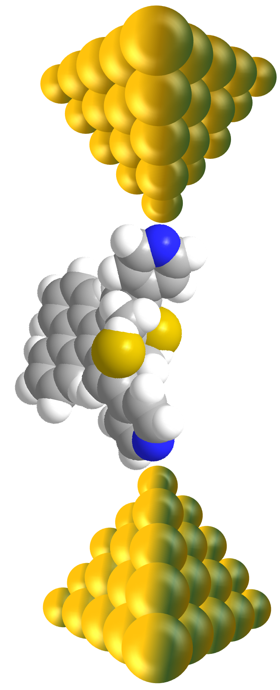
Nanoscale Molecular Junctions – An Electrochemical ApproachInstrumentation and methodology development
The field of molecular electronics aims at constructing a detailed knowledge base of the physico-chemical properties of single molecule-based junctions and the mechanistic behind the single (or ensemble) charge/heat transport. Such knowledge is the key to design the next generation of hybrid electronic high-performance devices for a wide variety of applications in organic electronics, sensing, optoelectronics, bio-manufacturing etc. A consensus on how structural and conformational parameters affect the charge transport, and vice versa, has not yet been reached in the scientific community, but is strongly desirable because of the imminent potential of single(or ensemble) molecular junctions as the prototype building block for functional materials and molecular electronic devices. The aim of my research work is to contribute to that knowledge..The main aim of our Research is to develop necessary instrumentation and explore the electronic, thermal and thermoelectric properties in metal (or carbon) │molecule│metal (or carbon) and metal (or carbon) │SAM│metal (or carbon) junctions employing a nanoscale electrochemical measurement approach. By studying the electronic properties at various level of complexity from single molecule to single cell, Structure property relationships can be established, Using established structure property relations, we will finally explore the ways in which these relations can be translated to the real-world applications and will help to solve the unwound mysteries of the nature. We are trying to reveal how atomic-detailed nano-scaled structural modification in molecules can affect the performance, energy consumption and longevity of molecular-scale devices. In terms of the practical point of view, our Research holds a great the promise of developing flexible, lightweight, solution-processable, and low-cost molecular devicesWe are employing the following topology for a molecular junction: A central functional unit (F) is attached via spacer units (S) and anchoring groups (A), either symmetrically (A-S-F-S-A) or asymmetrically (A-S-F-S) to contacting electrodes. The latter are represented either by the tip of an STM or CP-AFM or EGaIn top electrode and an adsorbate-modified single-crystal metal substrate or a pair of nanoelectrodes in a fixed or variable (mechanically controlled break junction, MCBJ) geometry. We are trying to evaluate how the charge transport through single molecules and hybrid assemblies is modulated by external stimuli. Also exploring the conductance switching phenomena via electric field control, redox control and/or with light-responsive molecules. The main motive is at establishing fundamental aspects of electron transport and thermoelectric properties as well as relationships between structural-functionality of nanoscale molecular junctions and their electronic response upon electrochemical and/or light stimulation, pH change etc. at the single-molecule or ensemble level. Application studies towards molecular recognition like Sensing(inorganic and bio)are anticipated.It should eventually be possible to expand our knowledge of molecular electronics into high-throughput printed nano-electronic technology.
Projects
1.Intrumentation developement
Large area based molecular junction setup/EGaIn Setup
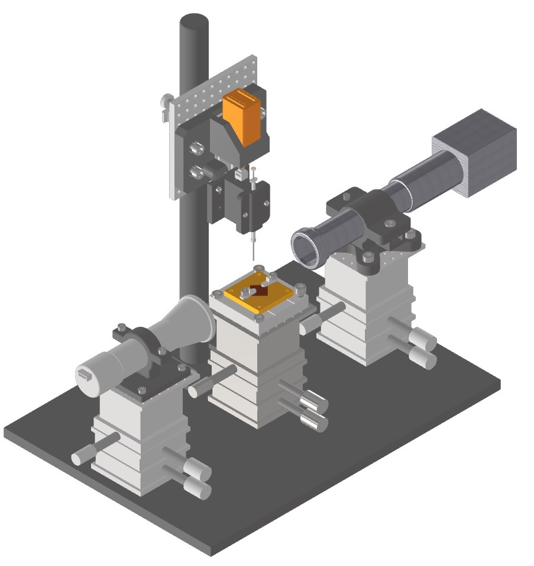
This setup is capable of measurement of picoamp electrical current generated upon applying potential(Conductance) or temperature gradient (Thermopower) across the top EGaIn and bottom flat metal Electrode(Template stripped Au, Ag )
Mechanically controlled break junction setup
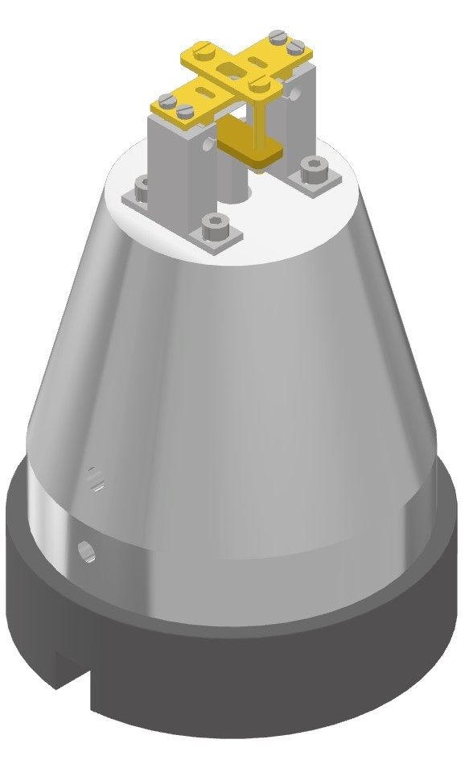
Capable of measuring femtoamp current across single metal|molecule|metal junctions. Inbuilt peizo and bipotentiostatic configuration. Owing to the open design, effect of external stimuli on molecular conductance are also studied using this setup .
Scanning tunneling Microscope-Break junction
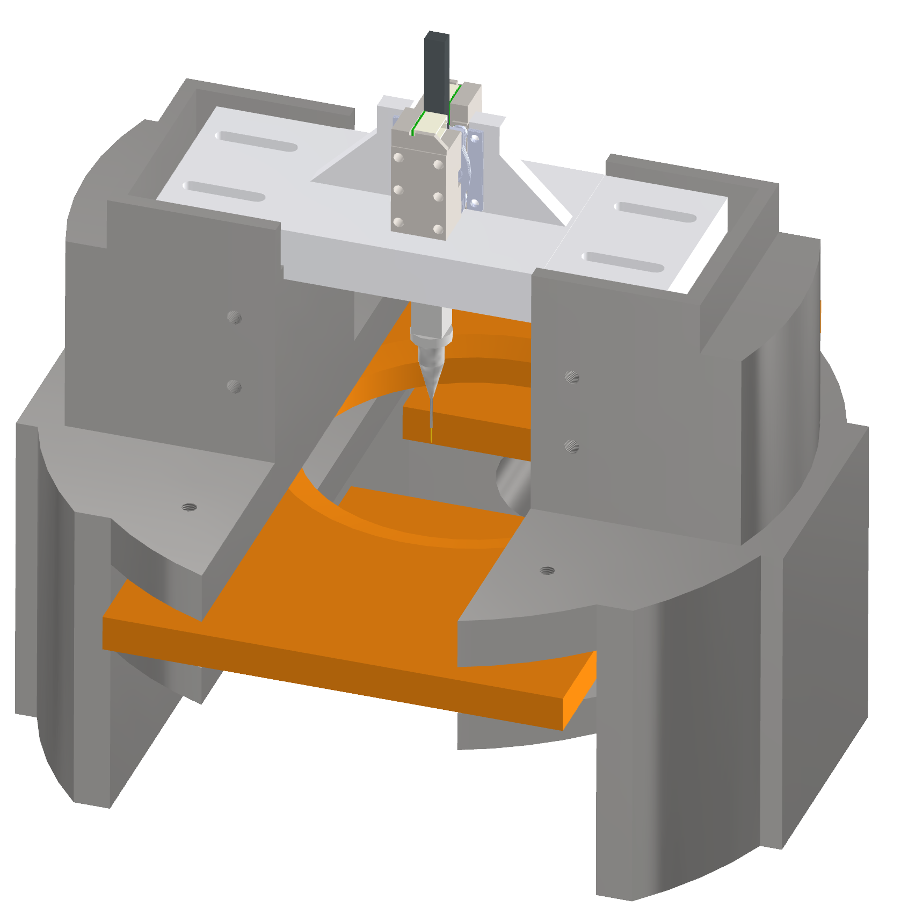
Similar to MCBJ due to formation of single molecular junctions. However junctions are created vertically between top metal electrode and bottom flat electrode. This architecture allows heating of bottom electrode to measure thermopower and spin dependent charge transport studies
2.Studying Electron transport across Self assembled molecular monolayers using EGaIn setup
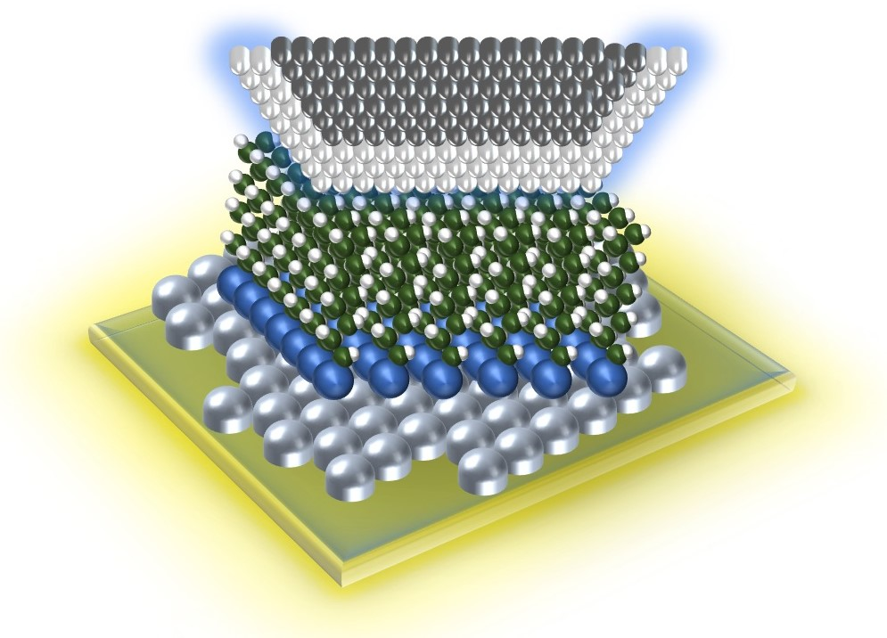
Studying electron transport through self assembled monolayers using EGaIn as top electrode and template stripped metal as bottom electrode will allow us to characterize the effect of length of molecule, intra and inter molecular interactions, metal molecular interaction , effect of change of metal electrodes on the transport properties of molecular monolayers. Effect of external conditions like humidity, presence of other gases, light are also explored.
2.Studying thermopower generated across Self assembled molecular monolayers using EGaIn setup
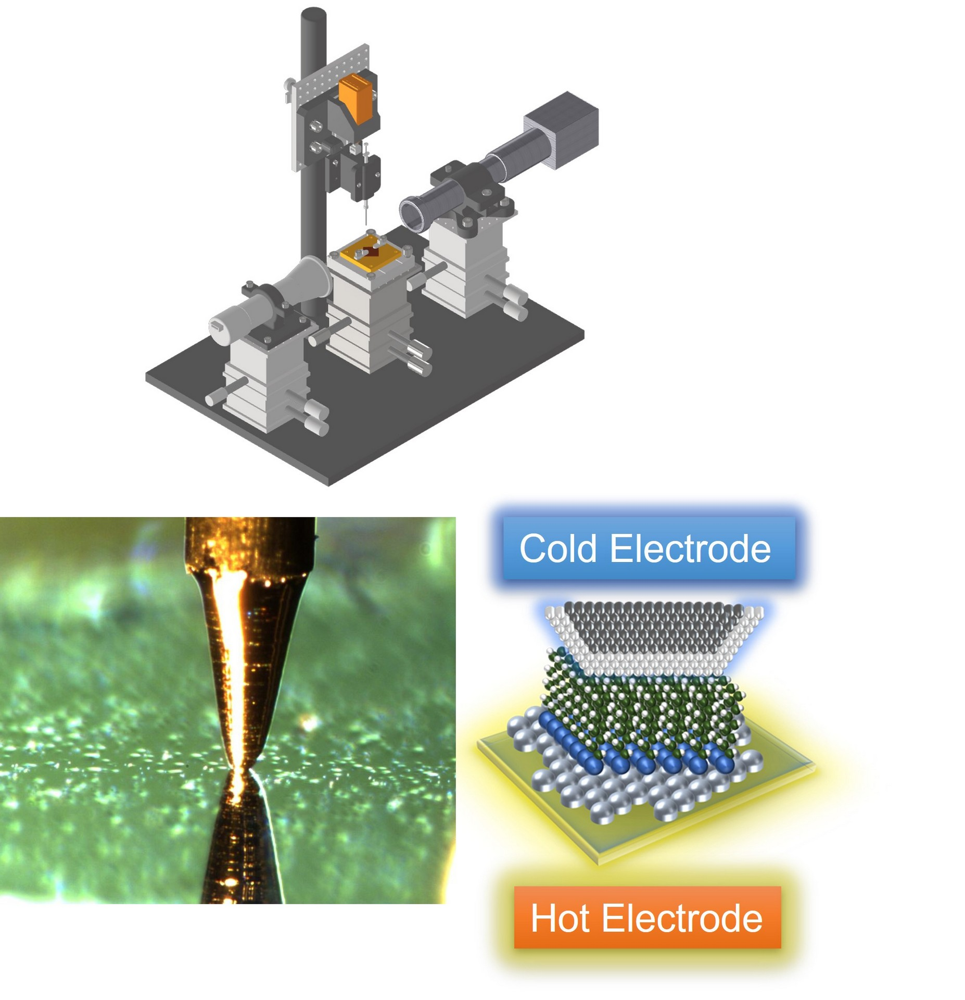
After IV/Conductance characterization of target molecule Self assembled monolayer based molecular junctions, the next logical step is to measure the thermopower generated upon application of external temperature gradient, since thermopower studies can reveal more information concerning the mechanism of charge transport through the molecular system like type of majority carriers , HOMO or LUMO mediated charge transport etc.
3.Electron transport study across single molecules using MCBJ and STM setup: Effect of molecular architecture and external stimuli
Going further at single molecular level, the electronic transport studies using MCBJ and STM setups will be used to give insight to the effect of molecular architecture on the transport properties of single molecules. These studies will unveil the Quantum interference effects of electronics waves through molecular orbital. These studies will give further insight on how atomic-detailed nano-scaled structural modification in molecules can affect the performance, energy consumption and longevity of molecular-scale devices. .
4.Study of Thermopower generated across single molecules using STM setup: Paving the way for highly efficient ,renewable energy
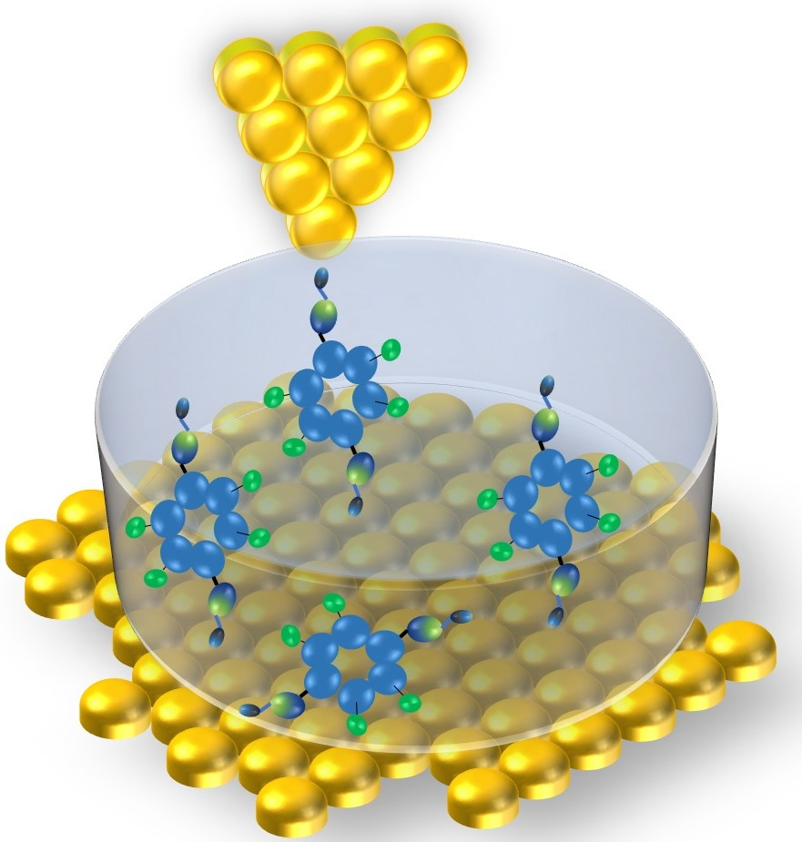
This work will offer an unprecedented opportunity to contribute to the existing knowledge of efficiently harnessing solar and thermal energy. The study of heat transport of different metals, and molecular junctions is a fundamental scientific and technological step forward in managing and controlling heat dissipation at the nanoscale electronics.
5.Applying Artificial intelligence and Machine learning to Molecular electronics
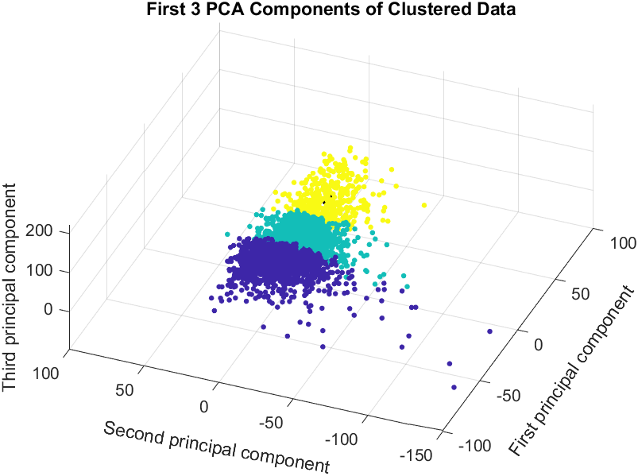
Statistical analysis of the molecular conductance or thermopower data gives the population property of the system. However, as the molecular junctions are dynamic and every time a new junction geometry is formed. Depending upon the molecular system a particular anchoring chemistry might not always be probable. However all these properties can't be extracted by the statistical analysis of molecular electronics data. Machine learning can extract every possible bit of information by analyzing each of the molecular trace individuals. I am using Principle component analysis, K-means++, GAL , and T-SNE machine learning tools to cluster the data into groups having similar features. Each group has similar properties like a group of molecular conductance traces with high conductance or a group with low conductance or just a group of tunneling traces where no molecule was trapped.
6.Studying and modulating Reaction dyanamic at single molecular level in realtime
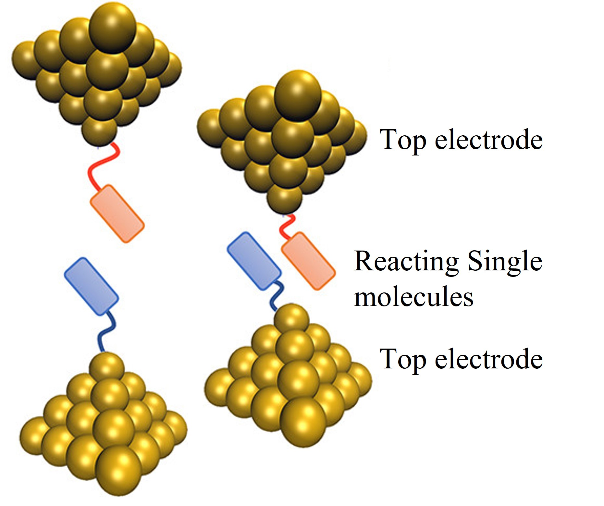
Real time conductance measurement with reactants attached to electrodes should guide us towards the electronic property of intermediates involved.
Using break junction techniques to mechanically stretch a electrically connected molecule forcing it to isomerise to a stable form. The isomerisation is followed in real-time using conductance measurements opening a new era of single molecule mechanochemistry. Measuring conductance at high sampling rate allows us to probe reaction intermediates and metastable states as well.
7.Quantifying the 1/f noise in molecular junctions: Flicker noise power measurements
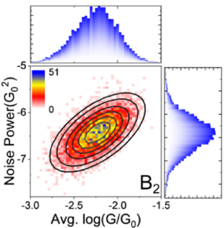
Flicker noise or pink noise arise in molecular junctions due to the rearrangement of atom in connecting electrodes as the junction is evolving by pullling the electrodes apart. Flicker noise can differentiate between through bond or through space tunneling mechanism and becomes an efficient tool to detect molecular stacking conductance plateau in single molecule conductance measurements. Using flicker noise as a probe, the coupling strength of different anchroing groups can be evaluated which is necessary to design stable molecular junctions with improved junction lifetimes.
Future plans:
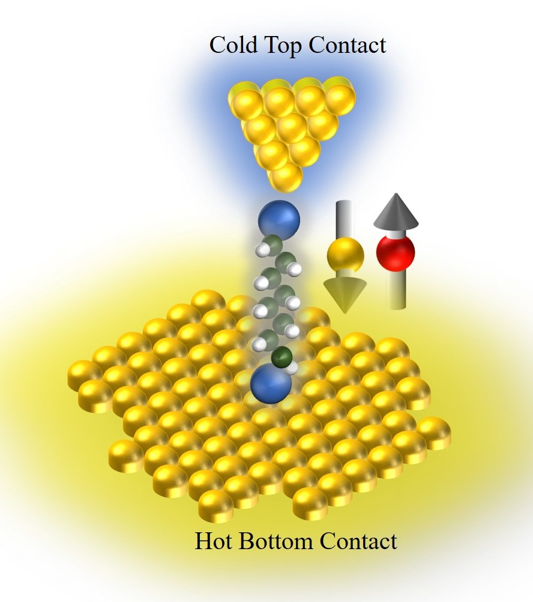
Heat Transport across molecular junctions
Studying heat transport through single molecular junctions using Custom made STM setup by heating the bottom electrode and subsequently measuring the temperature of top electrode after molecular junction formation
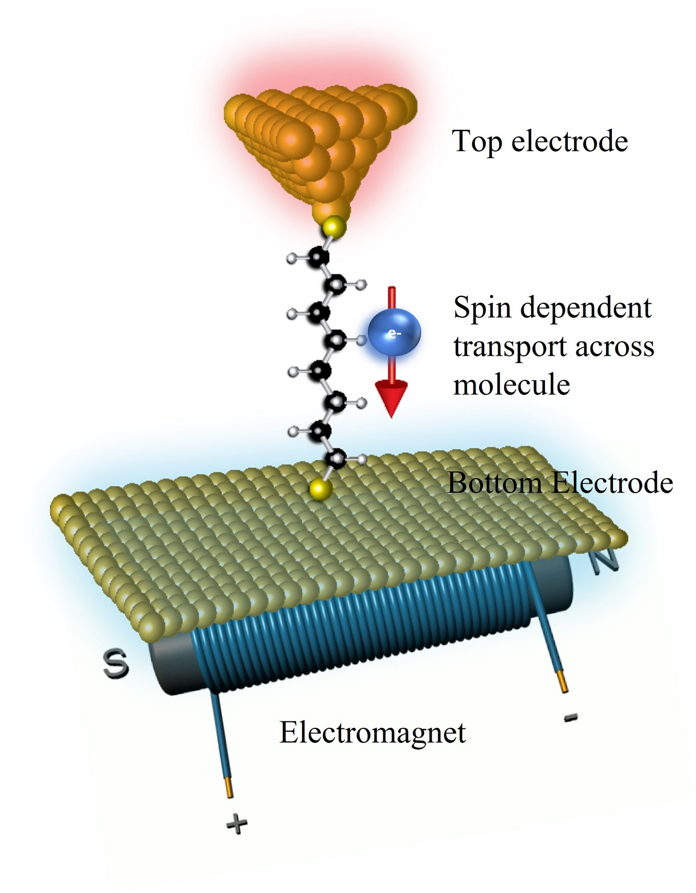
Spintronics
The effect of spin on electronic transport through single molecules in external magnetic field, chirality induced spin selectivity effect will be explored.